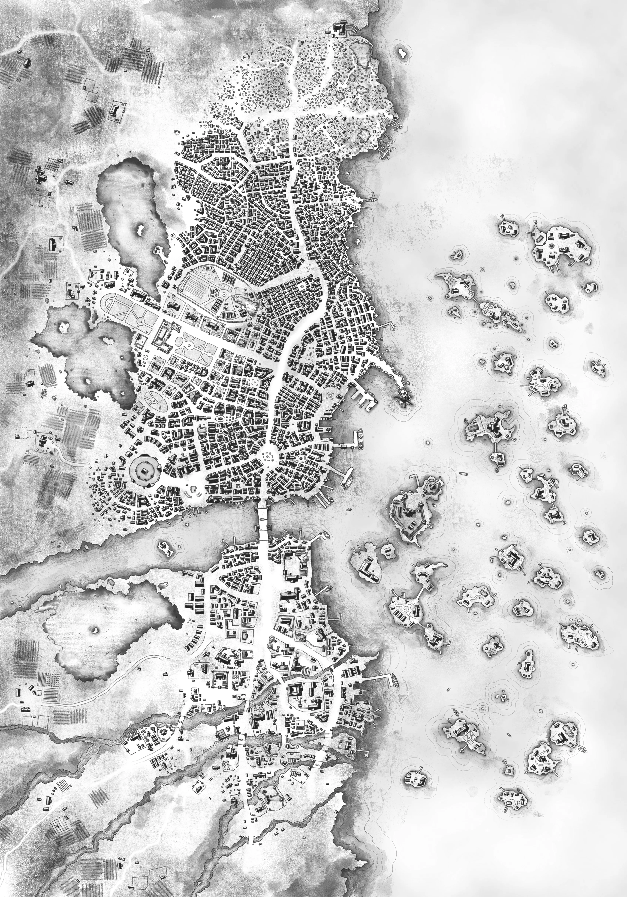

Platser Mutant: Undergångens Arvtagare Hindenburg: Min älskade Vault master, 2026-11-17 21:09 UTC
- Citerat ur en bok
- Rättat ur en bok eller en persons text
- Skrivet av en person
- Skrivet av en modell
Hindenburg
Pyrisamfundets huvudstad, belägen vid Malsjöns norra strand
Hindenburg är Pyrisamfundets huvudstad och ligger belägen på en sluttning vid den långsträckta Malsjöns norra strand. Kring staden utbreder sig stora jordbruksområden, där herrskapsfolkets undersåtar odlar spannmål och rotfrukt som säljs i Hindenburgs butiker med god förtjänst. På sjön trängs fiskeskutor, handelsfartyg och enstaka hjulångare med de krigsskepp som patrullerar området mellan staden och Malsjöns utlopp i Österhavet.7 Det var vid Malsjöns strand allt en gång tog sin början, och det är här som framtidens smedja är belägen. Kejsaren i sitt palats, kommissarierna i sitt rådsresidens, generalerna i sitt högkvarter och bolagsmagnaterna i sina skärgårdsvillor – det är här de smider sina planer för morgondagens erövringar och vinster. Här finns också den kunskapliga eliten samlad, dels bestående av den kejserliga administrationens exploratorer och historiografer, dels av orädda zonfarare och oberoende kunskapare. Pirit, Nordholmia och Karle må alla ha sin särprägel och sin relativa frihet, men det är från Hindenburg de styrs. Det är huvudstadens potentater som dirigerar våldsmakt och tvångsmakt, och har rätten att bestämma vad som skall gälla som sant och falskt.4
Dagens Hindenburg är beläget vid Malsjöns norra strand, alldeles vid Nordalälvens utlopp. Bebyggelsen klättrar upp efter en svagt sluttande åskam, på vars krön det majestätiska Gryningspalatset är placerat.4
Historia
Hindenburg har förändrats mycket under sin relativt långa och stolta historia, som är detsamma som Pyrisamfundets historia.6 Om man får tro vad som sägs var staden i början inte mycket mer än ett tältläger. Men det var flera hundra år tillbaka i tiden och sedan dess har såväl människors som mutanters kunskaper vuxit vad gäller att bygga bostäder och manicker, samt att tämja och utnyttja naturen.7
Tältlägret har vuxit till ett stort samhälle, samtidigt som invånarna gått från att vara nomader till att bli stadsboende Hindenburgare. Och oavsett om de tillhör överklassen eller lever bland kåkstadens fattiga och utslagna har de ett gemensamt: en känsla, vilken säger dem att de, som invånare i Pyrisamfundets huvudstad, dagligen bidrar till att bygga framtidens värld!7
Åsikterna går dock långt isär när det gäller att bestämma hur denna värld skall se ut.7 Hur tältlägret vid ruinstaden Pyri utvecklades till det kejserliga Pyrisamfundet finns det väldigt många och olikartade berättelser om. Men även om knegarmutanternas version skiljer sig från den som berättas av överhistoriograf Jeremias Silfverhjässa, finns det många gemensamma drag som handlar om kritiska händelser och viktiga personer – vilka dock tolkas och värderas på olika sätt beroende på vem som har ordet.4
Det är allmänt vedertaget att staden Hindenburg grundades av Maximilian Skarprättare, för över två hundra år sedan. Platsen var i det närmaste idealisk: Malsjöns vatten var rika på fisk, den närbelägna ruinstaden dolde många användbara fynd och fornmaterial och markerna på sjöns norrsida var bördiga och förhållandevis befriade från kringdrivande monstrositeter. På denna tid var kampen om resurser mycket hård, men Maximilian och hans folk försvarade sig väl tack vare de kunskaper härskaren ärvt från sina släktingar – inte minst kunskapen om hur att tillverka skjutvapen. Snart började ryktet spridas om den väldige ”Härskaren av Pyri” och många nomadiska marodörstammar kom att ansluta sig till samhället.4
Fred och utveckling sägs ha varat fram till att den sägenomspunna Hydran började härja i området, tillsammans med sina muterade och motorburna horder.5 Vem Hydran egentligen var och varifrån han kom är omstritt bland mutantförkämpar och historiografer.5 Hur det än är med den saken var det Maximilian och hans sammansvurna som besegrade den härjande banditen och satte stopp för hans terrorvälde. Priset som betalades för segern var högt, inte minst i avseendet att härskaren själv fick sätta livet till. Men Otto Skarprättare tog upp sin faders fallna mantel och kunde med segern i ryggen iscensätta arbetet med att bygga ett rike.5
Samfundet bestod till en början av en handfull samhällen runt ruinstaden Pyri, vilken följaktligen fick ge namn åt gemenskapen, och Ottos by gavs namnet Hindenburg. Teorierna om varför är många, men tre av dem tycks vara mer vida spridda än andra: Att namnet kommer från 1) den brave knekten Alfman Hindenburg som fungerade som Ottos livgardist under slaget på Pyri slätter, 2) platsen på vilken Maximilian hittades död, än idag kallad Hindens askmark, 3) Maximilians kokerska, en hjortfru vid namn Taffi-Liz Burrg.3
Allt sedan grundandet tycks Pyrisamfundet ha varit en enda lång framgångssaga. Historien har visserligen varit blodig och full av såväl interna oroligheter som konflikter med grannar. Men ingenting har kunnat stoppa rikets fortsatta utbredning. En kombination av underfundig diplomati och överväldigande våldsmakt har gjort det möjligt för kejsarna att tackla alla tänkbara hinder. Ibland har det tagit lite tid, som när stadsstaterna Nordholmia och Poirot (nu Pirit) inlemmades i samfundet, men till slut har det storpyriska rikets härskare fått sin vilja igenom.3 Expansionen har fortsatt, ibland snabbt och ibland i sakta mak, och samtidigt har framsteg gjorts på kunskapandets, uppfinneriets och konstens områden.3
Redan Otto I skall ha gjort stora framsteg inom skeppsbyggarkonsten och utvecklat nya, effektiva jordbruks- och förädlingstekniker. Efterföljaren Valentin säkrade Malsjöns inlopp och Otto II är känd för att ha initierat kontakt och handelsförbindelser som så småningom låg till grund för samfundets tillväxt västerut. Kejsar Oskard har gått till historien som en kunskaplig förkämpe, inte minst eftersom skrivkonsten började systematiseras och förfinas under hans fredliga regentperiod. Herbart Skarprättare satt inte länge som kejsare, och befann sig därtill mest på resande fot under sin period som härskare.3
Efter Herbart äntrade krigsherren och konstälskaren Wolmar tronen. Frigolinaoperan och den kejserliga baletten grundades i pauserna mellan framryckningarna, och tog förstås intryck av kriget – något som gav upphov till klassiska stycken som exempelvis arian ”Madam Tutts och de Skallige folken” och dansstycket ”Nipprig svängom till puka och larm”. Wolmars son Fabian fortsatte på den inslagna krigiska vägen, och är framför allt ihågkommen för att ha uppfört det första verkliga kejsarpalatset, idag blott ett raserat skelett av väggar och golv beläget i Kåkstaden.3 Herbarts andre son Rudolf Skarprättare gav Pyrisamfundet dess nuvarande östvästliga sträckning genom slaget vid Uddevåld, innan han mördades av hjälteautomaten Vax 10 tillsammans med större delen av sin familj.3 Ensam överlevande var den unge Julius, som sålunda blev den första av rikets moderna kejsare. Han följdes av Ludvigg, Elmer och Kjell innan rikets nuvarande härskare axlade manteln år 83 pt.3
Kejsar Thorulf Skarprättares regeringstid har präglats av ett relativt lugn, vilket oftast förklaras med att han undvikit krig med yttre fiender och i stället nyttjat militär och ordningsmakt mot interna konflikter.3 I Hindenburg har olika motståndsgrupper definitivt vuxit sig starkare och mer organiserade under kejsarmaktens hårdhänta bevakning – något som i synnerhet gäller efter att militären slog ned det så kallade kvarterskriget 86 pt., då gäng från Hundängen respektive Kopparberget drabbade samman. Något enstaka år efter kvarterskriget gav sig det aristokratiska människorättssällskapet Vita Liljans Redskap (VLR) tillkänna, i och med en tyst fackelmarsch längs Maximiliangatan. Därefter dröjde det inte länge förrän Lejonorden hörde talas om sig, med sin märkliga retorik enligt vilken mutanterna står över och borde ha rätt att dominera människorna. Mindre sammandrabbningar har sedan dess utspelat sig mellan Lejonordens anhängare och medlemmar av Nimrodbrigaden, hemmahörande på det människodominerade Kopparberget.3
Det relativt lugna inrikesklimatet har dock även haft många positiva bieffekter, vid sidan om tryggheten och välmåendet det skapat. Färdvägarna och kommunikationerna har blivit säkrare, vilket medfört att rikets olika landsändar knutits närmare varandra. Handeln blomstrar tack vare snabba och någorlunda säkra transporter längs triangelrutten och vattenlederna. Dessutom har exporthandeln fått ett uppsving – varor går per båt längs kusterna och via den så kallade Blixekanalen mellan Karle och Göborg. I förlängningen betyder det mer krediter i administrationens kassakistor, vilka spenderats på infrastruktur, expeditioner, kunskapliga uppfinnerier, uppiffade manufakturlokaler, ökade anslag till militären med mera. Faktum är att medelmedborgaren aldrig haft det så bra som under de senaste tio åren. Detta gäller framför allt i huvudstaden, där de välmående handelsmännen och bolagsägarna ökat i antal samtidigt som knegarnas löner och arbetsvillkor förbättrats avsevärt.3
Men välmågan gäller förstås inte alla. De som står utanför systemet – de arbetslösa, de sjuka, de vanföra – kan bara se på när deras grannar får det bättre och bättre. Dessa utanförstående är närmast uteslutande mutanter och bildar rekryteringsbas för de mer eller mindre militanta kampgrupper som finns i huvudstaden och annorstädes – grupper som i sin tur upplevs som ett hot av många människor, vilket får till följd att även de sluter sig samman och planerar sina motdrag. Så allt medan riket går gryningen till mötes och sakta höjer sig ur stoftet efter Katastrofen, växer sig en förödelsebringande klyfta allt bredare.8
Alla i Hindenburg kan se det, alla vet om det, och ändå agerar inte kejsar Thorulf i frågan.8 Kejsaren har låtit VLR hålla sina parader ostörda, han har inte beordrat arresteringen av Lejonordens ledning och enligt ryktet har han inte brytt sig nämnvärt om ryktet att en militant grupp vid namn Bevara Pyri Mänskligt (BPM) bildats av ledande pyriska medborgare.8 Kanske är dock någonting på väg att hända.8
Befolkning
Mellan 16 000 och 20 000 registrerade medborgare är bofasta i Hindenburg, varav en knapp tredjedel är människor, och här finns också mängder av lösdrivare, äventyrare och andra typer av tillfälliga besökare.6 Men det är alltid mer folk än så i huvudstaden. Dels bor flera tusen personer i stadens fattigkvarter eller som oregistrerade inneboende. Och dels finns cirka 2 500 sängplatser att hyra på olika gästgiverier och pensionat. Dessa är nästan alltid fullbelagda. Särskilt trångt är det under basarveckorna på våren och efter höstskörden då många beger sig till Hindenburg för att festa och fynda mäktiga fornmanicker på den berömda Bazaren.7 I perioder – särskilt i samband med festligheter som Bazarveckorna på våren och sommarkalaset Kejsar Wolmars Dans & Skrattfest – kan antalet personer i tätorten överstiga sextiotusen, inräknat besökare och barn.4
Pyrisamfundets huvudstad uppvisar enorma kontraster. Här samlas och samsas representanter för alla möjliga och omöjliga grupperingar i den nyansrika Gryningsvärlden. Skillnaden mellan rik och fattig, kultiverad och obildad, ömfoting och zonfarare, ägare och löneslav bildar dimensioner i en sjudande och välkryddad soppa, vilken hålls kokande över en eld matad med orubblig framtidstro och patriotisk stolthet. Anrättningen har dock en tendens att separera och det händer att vissa ingredienser skär sig mot varandra. Hindenburgs karaktär som administrativt centrum smittar inte bara av sig på representanter för samfundets övre skikt, utan också andra falanger har en tydligare tendens att organisera sig än i andra delar av riket. Antalet högröstade och mer eller mindre våldsbenägna sammanslutningar, klubbar, ordnar, föreningar och sällskap är mycket stort, vilket förstås innebär att konflikter och skärmytslingar förekommer med täta intervall.4
Den konfliktlinje som är allra tydligast och som har präglat Hindenburg sedan staden grundades är konflikten mellan människa och mutant. Även om frågans aktualitet varierat under årens lopp kan ingen som befunnit sig mer än två veckor i huvudstaden undgå att lägga märke till hur mutanterna förfördelas. Och det är inte heller något man hymlar med. Människorna återfinns som ledande administratörer, chefer i de kejserliga bolagen och som arbetsledare i manufakturerna. Det heter visserligen att tillsättningen av olika tjänster görs med utgångspunkt i de sökandes kompetens och meriter, men att det just är människorna som besitter dessa kvaliteter. Enstaka mutanter har lyckats höja sig över gatornas smuts och damm, och används som retoriska exempel av de makthavare som försvarar missförhållandena.4
Kanske är det just dessa enstaka undantag som än så länge hindrat soppan från att koka över, men mycket tyder på att temperaturen stegrats under de senaste åren. Samtidigt som antalet öppna kravaller och gängstridigheter minskat markant har nämligen såväl människorättskämparna som rättighetstörstande mutanter slutit sig samman och organiserat sig. Den relativa frånvaron av våldsamheter under det senaste decenniet kan alltså mycket väl tyda på annat än att människa och mutant lärt sig leva i harmoni tillsammans. Kanske är det bara lugnet före stormen.4
Styre och ledningsfunktioner
Pyrisamfundet är Skarprättarnas rike och Hindenburg är deras stad, därom råder inga tvivel. Det är kejsarättens förtjänst att ett liv inom rikets gränser är långt mycket mer behagligt än ett liv i vildmarken där bortom, samt att ett liv i huvudstaden är tryggare och lyckligare än någon annanstans i Pyri. Som medborgare av Pyrisamfundet har man alltså bara att tacka sin lyckliga stjärna för att man tillåts stanna och bedriva verksamhet på en så ovanligt trevlig plats, i den annars hårda och oförlåtande Gryningsvärlden.9
Det ovanstående betyder förstås inte att samfundets folk alltid är tysta och medgörliga, men det är mycket sällan som protesterna riktas mot kejsaren. Knegarna protesterar mot manufakturägaren eller Handelskommissionens agenter; mutanterna gör uppror mot människor i allmänhet; psionikerna riktar sitt agg mot PSIPO, men mycket få går till angrepp mot kejsarmakten – något som till stor del beror på att de allra flesta är övertygade om att kejsaren helt eller delvis står på deras sida. Det är bara det att kejsaren har så fruktansvärt mycket att hålla reda på att denne oftast måste överlåta till administrationen och dess ordningsmakt att sköta de dagliga bestyren. De gånger då kejsaren personligen träder fram som initiativtagare till en eller annan lagändring eller föreskrift är försvinnande få, varför folkets ilska tenderar att kanaliseras mot figurer längre ned i hierarkin. Detta trots att alla vet att kejsarnas makt egentligen är total.9
För så är det. Till skillnad från Pirit, Nordholmia och Karle med sina guvernörer lyder Hindenburg direkt under kejsaren – det är rikets härskare som har det yttersta avgörandet i alla frågor som rör staden, såväl som samfundet i stort. Naturligtvis är det dock en allt för stor uppgift för bara en man att hålla rätt på allt som måste göras i riket, varför kejsaren har en mycket stor och komplicerad administration till sitt förfogande. Administrationen är uppdelad i fem kommissioner vilka i sin tur är indelade i underfraktioner ansvariga för allt från infrastruktur och skatteindrivning till kunskapssammanställning och diplomatiska förbindelser. Till detta kommer också militärmakten och dess överbefälhavare – för närvarande Aston Schöld. Kommissionernas ledare samt överbefälhavaren kommer alla från samfundets aristokratiska urfamiljer Krööger, Schöld, Wrede och Vattimo, och bildar tillsammans Kommissionskollegiet, vilket fungerar som kejsarens råd och verkställande organ.10
För mannen på gatan är det dock främst konstaplarna som symboliserar överheten. I huvudstaden är konstaplarna många och nitiska i sitt genomdrivande av lag och rätt. I varje stadsdel finns en eller ett par så kallade konstapelkåkar, vilka ordningsmännen utgår från på sina patruller och dit lagbrytande medborgare kan fraktas. Bovar, banditer och busar hamnar dock oftare i någon av stadens tre arrestbyggnader, vilka finns strategiskt utplacerade i de bråkigare kvarteren. För den som begått något grövre brott väntar förstås ett möte med någon av huvudstadens tre domare, vilka alla är strängt upptagna med att pröva åtal i stort och smått.11
Andra maktfraktioner
Som invånare i Pyrisamfundets huvudstad måste man dock ta hänsyn till en hierarki som inbegriper betydligt fler agenter än administrationens hantlangare. Snart sagt varje stadsdel har sin egen speciella struktur, med sina inofficiella regelsystem och viktiga centralgestalter. Bland Östadens kobbar och skär är det förstås de riktigt välbeställda näringsidkarna som tillsammans styr och ställer. Pluto Dunder, Silvia Dufva och några till dikterar mer eller mindre medvetet hur man skall uppträda, vad man skall tycka och var man skall äta middag för att i slutändan accepteras i distriktets sociala gemenskap. I Hundängen har Lejonorden och dess ledare Cassius i allt större utsträckning kommit att vara ledstjärnan i liknande frågor. En viktig skillnad är dock att ingen i Östaden riskerar att brännas till döds på öppen gata för att ha uttryckt avvikande åsikter – något som händer nu och då bland Hundängens gränder.11
En annan maktfaktor som inte skall underskattas är den som utgörs av stadens nyhetsorgan, och då främst Polisgazetten. Gazettens ägare Knut-Georg Hlunga skulle aldrig hålla med om en sådan beskrivning, men faktum är att mycket som händer i staden kan härledas till tidskriften i fråga. Inte så att Polisgazettens murvlar och redaktör är ansvariga för de missförhållanden och oriktigheter de rapporterar om, men däremot har vissa artiklar fungerat som katalysator och tändvätska på en redan pyrande oroshärd. De olika tidningarnas ledarskribenter och gästtyckare fungerar också som en form av normförmedlande gestalter, som talar om vad folk bör tycka, tänka och göra för att inte falla utanför det normalas ramar.11
Slutligen kan man knappast undgå att nämna den skuggfigur som kallas Falco Stroganoff.11 För även om vissa skeptiker betvivlar att Hindenburgs brottslighet mer eller mindre styrs av en ensam och ljusskygg figur, är det onekligen så att merparten av stadens brottslingar själva anser sig vara i herr Stroganoffs sold. Oavsett om nämnde figur finns eller inte måste man alltså som stadsbo räkna med den organiserade brottsligheten som en av de maktfraktioner som dikterar vanliga medborgares liv – tillvaron i rikets huvudstad är långt ifrån trygg och säker.11 Konstaplarna har visserligen läget under hjälplig kontroll, men vissa delar av staden är fortfarande farliga att besöka.11
Konflikter
Förutom konfliktlinjen mellan människor och mutanter finns det förstås många andra rivaliserande grupper som då och då krockar, med varierande kraft.12 En av de schismer som blivit allt tydligare under det senaste decenniet är den mellan aristokratin och den välbeställda bolagskåren.12 Manufakturägarna har tack vare uppsvinget i handeln samlat på sig avsevärda förmögenheter, vilket självfallet ger dem pondus och självförtroende. I takt med att deras rikedomar växt har de börjat ställa krav på inflytande och förmåner, då de menar att deras bidrag till rikets framåtskridande är avsevärt större än andra medborgares. Aristokraterna som styr och ställer inom den kejserliga administrationen vill ogärna erkänna sig utmanade av bolagsägarna och har än så länge slagit dövörat till. Aristokraterna framhåller bland annat att bolagspamparna inte hade varit någonting utan de knegare, hantverkare, innovatörer och kejserligt anställda tjänstemän som bidragit till att bygga upp deras verksamheter. Pamparna svarar förtörnat att knegarna och de andra är utbytbara verktyg, men att de själva är unika och viktiga för rikets framtid.12
Än så länge har konflikten inte orsakat mer än ett ställningskrig där hoten haglar fram och tillbaka.12 Exempelvis har manufakturägarna hotat med att avskeda alla knegare och i stället rekrytera ny arbetskraft från fjärran hamnar, på vilket administrationen svarade att de i sådana fall kommer att införa en lag som säger att manufakturer som verkar inom rikets gränser inte får anställa andra än pyriska medborgare.12 För tillfället har den aristokratiskt styrda administrationen övertaget, men maktbalansen förskjuts allt längre ju mer beroende samfundet blir av pamparnas bolagsverksamhet.12
En annan oblodig fejd att räkna med är den ständigt pågående kampen mellan å ena sidan Forntidskommissionens exploratorer och historiografer, och å andra sidan olika fristående kunskapare och forntidskännare. För det mesta märks inte denna konflikt för gemene man, som sällan har anledning att bekymra sig om kunskapliga spörsmål. Men i den retorik som följer i spåret av rättighetskämparnas kamp dyker ofta olika kunskapares utsagor upp för att stödja de egna och fälla motståndarsidans argument. Mutanterna lyssnar gärna på fria tänkare och utforskare som Max fon Maadman, Adelia fon Hartman och Larry Andrée i Pirit. Inte för att de nödvändigtvis framlägger teorier som stödjer tanken att mutanten är överordnad människan, men för att de på många punkter kritiserar historiografämbetet för att fara med osanning i andra frågor.12
Bland de människor som bryr sig om historiografiska rön är det förstås överhistoriograf Jeremias Silfverhjässa som är husguden, och det sägs att han nästan dagligen får en bunt brev som sorteras i två högar av hans assistent: dels beundrarpost, dels mordhot. Än så länge lever herr Silfverhjässa, men frågan är hur länge till – en fråga man till och med kan satsa krediter på, vid vadslagningsbordet på spelhålan Guldkalven.9
En mer blodig kamp är den som förs mot samfundets dolda psioniker. Det är visserligen inte förbjudet för psi-mutanter att vistas inom rikets gränser, och tack vare den senaste spiritistiska modeflugan i Hindenburg har psioniker i vissa kretsar faktiskt kommit att omges av ett romantiskt skimmer. Men detta till trots går psioniker mindre säkra i Hindenburg än annorstädes. Detta beror förstås på att en diskret och skicklig psi-mutant skulle kunna orsaka mycket stor skada i en stad där makten är centrerad till olika grupper som ständigt interagerar med varandra. Kraftfulla förnimmelsevrängare, osynlighetsvandrare och övertalningskonstnärer skulle mycket väl kunna störta bolag, vilseleda säkerhetstjänsten och lura tulldirektionens inspektörer på stora summor krediter.9
En mer psi-vänlig attityd håller på att få fotfäste inom aristokratin och det viskas till och med om att kejsaren engagerat ett psioniskt begåvat medium, men det skall nog mycket till innan psi-mutanter vågar visa sig öppet i Hindenburg med omnejd.9 De fåtaliga psioniker som vågat sig fram ur skuggorna till följd av överklassens vurm för mysticism och andlighet lever minst sagt farligt, med ständiga dödshot hängande över huvudet.9
Slutligen bör nämnas en konfliktlinje som kan verka nog så harmlös, men som faktiskt kostar många liv och lemmar varje år: idrottsrivaliteter. Särskilt sockerklubbarna omges av fans så lojala och hängivna att de gladeligen skulle offra sin vänstra hand för klubbens ära. Det hela blir förstås inte bättre av att stadens lag är uppdelade utifrån bostadskvarter, vilket betyder att alla sociala orättvisor genomsyrar idrottandet. I anslutning till viktiga och särskilt laddade matcher utbryter regelmässigt tumultartade slagsmål och ibland även skottlossning. Det är som om representanterna för de olika lagen tar idrotten som ursäkt för att uttrycka frustrationer och aggressioner som egentligen snarare är kopplade till orättvisa livsvillkor än till idrott.9
Handel
De som har mest kontakt med främmande länder är Pyrisamfundets handelshus och bolag. Fraktskepp lastade med varor från Hindenburgs hamn avgår dagligen mot Visby, Nekropolis, Sursvall och kuststäder på kontinenten. Några fåtaliga passagerare brukar de också ha med sig – oftast äventyrare och upptäcktsresande på väg mot någon fjärran zon där de tror sig kunna finna gömda skatter i form av högteknologiska underverk från de gamlas tid. Diplomater och ämbetsmän i rikets tjänst är sällsynta medpassagerare, men tycks ha blivit något vanligare under det senaste decenniet.7
Stadsdelar
Huvudartiklar: Skanshaga, Marknadsdistriktet, Östaden, Fabriksområdet, Arbetarkvarteren, Kåkstaden
Hindenburg är indelat i flera stadsdelar.13
När Kejsar Elmer beslöt att omlokalisera Hindenburgs tätort inleddes ett omsorgsfullt planeringsarbete. Gryningspalatset uppfördes där fortet Skanshind tidigare stått och blev utgångspunkt för övrig bebyggelse. Från palatset drogs Kejsar Ottos esplanad ända ned till hamnen. På ömse sidor om denna växte den förnäma stadsdelen Skanshaga upp, vilken breder ut sig mellan palatsområdet och Maximiliangatan som korsar Kejsar Ottos esplanad drygt två hundra meter ovanför vattenlinjen. Väster om Skanshaga, på var sin sida om den viktiga Nordalälven, förlades Marknadsdistriktet respektive Fabriksområdet vilka båda är beroende av älvens vatten.11
Österut återfinner man huvudparten av bostadskvarteren, för knegare, hantverkare och lägre tjänstemän. I motsats till stadsplanerarnas uttalade avsikter kom det stora bostadsområdet snabbt att präglas av en skarp skiljelinje, bestående av Maximiliangatan. Distriktet norr om gatan kallas Kopparberget och domineras av människor, medan det södra kallas Hundängen och närmast uteslutande befolkas av mutanter. Hundängen övergår österut i huvudstadens slumområde, kallat Kåkstaden, vilket passande nog är beläget på platsen för den gamla stadskärnan. Till de landbaserade stadsdelarna räknas slutligen Hamnområdet söder om Skanshaga och Garnisonen som ligger insprängd som en skyddande mur mellan rikemansområdet och de knegardominerade bostadskvarteren. Östaden, slutligen, är belägen på de många holmarna och kobbarna i Malsjöns skärgård. Hit har framför allt besuttna näringsidkare och hantverkare tagit sin tillflykt, sedan de blivit förmögna nog att vilja särskilja sig från de mer medelmåttiga yrkesbröderna i Kopparberget och Hundängen.11
Det sägs att tanken en gång var att Maximiliangatan, som skär genom hela staden och berör alla stadsdelar utom Garnisonen, skulle fungera på så sätt att invånarna kom att beblanda sig med varandra – inte minst genom att knegarna skulle bli tvungna att vandra genom de finare områdena för att ta sig till sina arbetsplatser. Men så har det inte riktigt blivit, eftersom stadsplanerarna underskattat klyftan mellan människa och mutant. Som det nu är har Maximiliangatan snarast blivit en vattendelare, mellan de finare områdena i norr befolkade av människor och de mer nedgångna kvarteren längs strandkanten där mutanterna tränger ihop sig med de sjuka och de gamla. Dessutom är det förstås så att varje område kommit att bli något av en stad i staden, vart och ett med sina små marknader, butiker och serveringar.14
Restauranger
Huvudartiklar: Trattoria Prytz, Belugi Lustgård, Lilla Pirit, Alo Veras Smörgåsbod, Klubb Spetsnasse
Kökscheferna på Hindenburgs matserveringar kan inte påstås vara särskilt fantasifulla eller ivriga att låta sig inspireras av intryck från omvärlden.15 Med ett fåtal undantag erbjuder matsedlarna olika rätter med malsjöanknytning – främst fiskrätter i olika utföranden, tillagade med varierande grad av finess.15 Vad gäller kvaliteten finns förstås enorma skillnader. Vivan Vindelstolpe, matskribent för Imperiets Röst, har påstått att den som jämför Klubb Spetsnasses hindenburgare med mästerkocken Jöntz Belugas fantastiska anrättningar är lika vilsen som den kunskapare som försöker jämföra en forntida hygieninrättning med ett nordpyriskt utedass.15
Nöjesinrättningar
Liksom i Pirit är utbudet av nöjen i Hindenburg mycket stort. Invånarna älskar, eller älskar att hata, sina nöjesprofiler och artister – vare sig det gäller sport, vadslagning eller sång och dans. Spännvidden av olika underhållningsformer är mycket stor, och med något enstaka undantag skiljer sig aristokratins njutningar avsevärt från knegarnas. Visst kan såväl en högre administratör som en garvarlärling finna nöje i att besöka Thorulfshov, men de är knappast där samtidigt – då den förre sannolikt är mer intresserad av Frigolinaoperans årliga utomhusuppsättning än av svettiga sporter som bodybombing och socker.16
På senare tid har en ny fluga börjat sprida sig, vilken tar sig olikartade uttryck på samhällstrappans olika avsatser. Det handlar förstås om mysticismen och flörten med det andliga. Som de flesta trender dök den först upp i överklassens salonger, men med tiden har den spritt sig allt längre ned och influerar numera även folklighetens inrättningar och sammankomster. Ett exempel på det senare är de så kallade ”temakvällarna för blindpåker” på spelhålan FemEss, där spelarna spelar med osedda kort i övertygelsen att de kan känna värdet av korten på hand. Ett annat exempel är improvisationsaftnarna på hamnsyltan Stajlpalatset och puben Fritzz Geraldzz där musikaliska virtuoser kastar sig ut i häftiga trudelutter inspirerade av ”andevärldens mönster”, som det sägs.17
Många högaristokratiska personligheter har uttalat sig med stigande oro över utvecklingen, då de menar att mysiktrenden kan öppna utrymmen för psioniker att verka obemärkt i huvudstaden. Än så länge har dock Ordningskommissionens verkställande enheter underlåtit att agera.17
Gästgiverier
I en stad som Hindenburg finns väldigt många, och väldigt olika typer av, gästgiverier. Merparten av de sängplatser som finns att hyra är inte ens belägna på något hotell eller liknande, utan finns hemma hos folk i deras vanliga bostäder. Dessa hyrrum är av mycket varierande kvalitet och de bästa är oftast upptagna av zonfarare och frilansande kunskapare – vilka brukar föredra hyrrum framför hotell, då de förra har en mer hemliknande karaktär som tilltalar flackande äventyrare.18
Vilka hyrrum som finns och vilken kvalitet de har sprids från mun till mun, framför allt på äventyrarnas favorithak.18 På Bunkern finns mycken information att hämta (läs: köpa), men där kan man förstås lika gärna bli lurad och hamna hos någon riktigt skräckvärd – som exempelvis den kärlekskranka änkan Vega Ramp, med sitt ständiga och falskstämda nynnande, sina stinkande bolster och en matlagning som får hackor att gå av.18
Butiker
Utbudet av varor och tjänster i Hindenburg är mycket stort i jämförelse med de flesta av Skandiens övriga städer. Det beror först och främst på att samfundets befolkning är så heterogen – både vad gäller preferenser och förmögenhet. De riktigt rika söker ständigt nya trender och artiklar som kan skilja dem från populasen, vilket lämnar fältet öppet för uppfinningsrika entreprenörer längre ned på samfundsstegen. Man kan bli mycket förmögen genom att konstruera en ny typ av monokelficka, rökkorvshållare, skönhetsprodukt eller hitta en annorlunda nisch inom tjänstesektorn – som exempelvis de inrättningar för andlig rengöring, spådomar och nagelvård som poppat upp den senaste tiden.19
I Hindenburg sker huvudparten av kommersen just i butiker, och inte på torgplatserna vilket annars är vanligt i samfundet. Även matvaror och hantverksarbeten säljs företrädesvis i någon affärslokal med diversifierat utbud, då de upptagna hindenburgarna vant sig vid att slippa hasta runt mellan olika specialister. Detta hindrar förstås inte att viss torghandel förekommer – dels för att de välbeställda hushållens tjänare skall kunna köpa dagsfärska grönsaker och nyfångad fisk, dels för att inte alla producenter har någon butik som är villig att saluföra deras varor. De senare håller framför allt till på Allt-i-allot i marknadsdistriktet eller på Himmelska torget, där man kan få tag på många olika sorters artiklar till ett betydligt lägre pris än bland marknadsdistriktets krämare.19
Läkarstugorna
I Hindenburg finns ingen större inrättning för vård av sjuka och skadade. Folk besöker i stället någon av de många läkarstugor som ligger utspridda i staden. Läkarna besitter varierande kunskaper om hur olika medikamenter och mixturer kan lindra och i bästa fall bota åkommor som feber, benröta, dumdjursbett och snuskförgiftning. Vissa är fantastiskt skickliga, som den karlefödda Nicodemicus Saluut verksam i Skanshaga, medan andra tycks göra lika mycket skada som nytta. Till de senare hör bland annat Ture ”Oture” Hiskelin, vars brygder och behandlingar visserligen är riktigt billiga och stundtals effektiva men som också undantagslöst medför klåda och rödkoppiga utslag. Trots detta har Oture en stadig kundkrets på Kopparberget, inte minst för att bieffekterna av hans behandlingar tydligt indikerar att han i alla fall inte är psioniker.20
Sedan finns det förstås ytterligare en kategori ”läkare”. Den skumögde Henjick Johann i Kåkstaden besöks ytterst sällan av samma person två gånger. Han påstår sig kunna bota allt från nageltrång till gaser, och mycket riktigt är det så. Men den som fått sin nagel bortsliten eller sin tarm behandlad med herr Johanns forntida ”gasextraktor” kommer ändå aldrig tillbaka.20
| Åkomma: | Otures priser: | Nicodemicus priser: |
|---|---|---|
| Feber, halsont etc. | 0,2 kr | 5 kr |
| Köttsår | 0,5 kr | 6 kr |
| Kritisk skada | 3 kr | 10 kr |
| Dödlig skada | – | 20 kr |
| Infektion | 1 kr | 10 kr |
Kunskap och information
Läskunnigheten är förhållandevis hög i Hindenburg, eftersom invånarna får tillägna sig basala läsfärdigheter inom ramen för milistjänstgöringen. Man skall dock inte förledas att tro att detta innebär att huvudstadens invånare är särskilt kunskapstörstande eller nyfikna. Den vanlige knegaren läser på sin höjd instruktionerna för kommande veckas arbete och några sidor i Polisgazetten. Men oftast behövs inte ens detta då förmännen gladeligen upplyser knegarna om slitgörat, och eftersom allt som står i gazetten snabbt förvandlas till samtalsämnen på krogen.21
Samtidigt är alla som bor i Hindenburg stolta över sin stads kunskapliga arv. För även om gotlänningarna, göborgarna och ulveborna sägs vara nog så kloka och uppfinningsrika, är det allmänt känt att Hindenburg är Österhavets kunskapliga högborg. Gryningspalatset, Forntidskommissionen och Riksarkivet inrymmer tillsammans allt väsentligt vetande som finns att tillgå i världen efter Katastrofen – i alla fall om man får tro språkrör som Polisgazetten och Imperiets röst.21
Tidskrifterna
Huvudstadens invånare litar fullständigt på sina nyhetsbulletiner när det gäller att förse dem med korrekta och välpresenterade uppdateringar om vad som händer i riket. Inte så att alla köper och läser tidningar, men när senaste numret av Polisgazetten eller Imperiets Röst utkommit leder det alltid till heta diskussioner runt borden på stamhaket eller klubblokalen.22
Som regel utkommer huvudstadens tidskrifter en gång per vecka och finansieras lika mycket av reklam som kontantpris. Men det finns också månadsmagasin utgivna av diverse klubbar och organisationer – exempelvis Storviltsklubben, Hindenburgs Konstnärsförening och Förenade Vapenhandlarna. Dessa är oftast gratis men är i gengäld tydligt riktade i sitt innehåll, varför allmänintresset av det som står knappast kan betraktas som stort.22
Offentliga inrättningar
I huvudstaden finns många offentliga inrättningar, där administratörer och tjänstemän arbetar för invånarnas gemensamma bästa. De fem kommissionernas byggnader i Skanshaga, garnisonen med sin generalstab samt domstolen med sina domare, rättsskipare och många notarier utgör de största, men därtill kommer också ordningsmaktens konstapelkåkar, heliografcentret, diligensstationen, rekryteringskontoret och andra mindre verksamheter. Den privatperson som inträder i någon av stadens offentliga inrättningar gör det i allmänhet med en känsla av vördnad, tar mössan i handen och torkar av sina skor på dörrmattan. För även om det finns undantag från den regeln har merparten av Hindenburgs invånare stor respekt för kejsaren och dennes ämbete.23
Centralgestalter
Huvudartiklar: Eugen Dufva, Eggar Stampiid, Cilia Adderton, Pluto Dunder, Silvia Dufva, Nicolas fon Rijn, Frank-Frank Peckwick, Cassius, Falco Stroganoff, Vincent Skog, Glorabell Silverstråk, Zigge Zmolk, Dizzi Mannerbult, Bejrån Bråck
Självfallet finns det många kända ansikten i en stad som Hindenburg. En särskilt bidragande orsak till det är Polisgazetten och andra tidskrifter, vilka tycks sälja som mest när någon känd persons nuna eller namn pryder omslaget. Och skulle personen inte vara omtalad innan medverkan i tidningen, så är han eller hon det definitivt därefter.24
Grupper
Huvudartiklar: Nimrodbrigaden, Lejonorden, Peckwickklubben, PSIPO
Livet i Hindenburg ser mycket olika ut beroende på vem man är. Skillnaden mellan rik och fattig, människa och mutant, är påtaglig och inverkar på alla aspekter av vardagslivet – var man bor och arbetar, vad man äter och hur man sysselsätter sig på vilodagen.25
Stora delar av Hindenburgs sociala liv styrs av tillhörigheten till olika föreningar, klubbar och ordnar. Vissa är organiserade runt gemensamma aktiviteter – som syjuntor, pokersällskap och supporterklubbar – medan andra är av mer ideologisk eller religiös karaktär. I kåkstaden finns dessutom löst sammanhållna ligistgäng, som förenas av ett samfällt hat och en gemensam hunger.26
Vita Liljans Redskap
Några av de organisationer som har stort inflytande på den hindenburgska stadsbilden är Nimrodbrigaden, Lejonorden, Peckwickklubben och PSIPO.27
Karta

1234567891011121314151617181920212223242526272829303132333435363738394041424344454647484950515253545556575859606162636465666869707172737475767778798081828384858687888990919293949596979899100101102103104105106107108109110111112- 1 Alo Veras Smörgåsbod
- 2 R-bajter
- 3 Casino Nancy
- 4 Darrtass
- 5 Flina Feja
- 6 Gillestugan
- 7 Grytet
- 8 Hej Baberiba
- 9 Kejsar Kjell
- 10 Klubb Spetsnasse
- 11 Knegarn's
- 12 Lilla Pirit
- 13 McAbers
- 14 Sista Styfvern
- 15 Thermopolium
- 16 Trattoria Prytz
- 17 Biografen
- 18 Bunkern
- 19 Esoterica
- 20 FemEss
- 21 Fritzz Geraldzz
- 22 Glorabell Silverstråk
- 23 Guldkalven
- 24 Klubb Topaz
- 25 Masses Musaik
- 26 Röthers Revysalong
- 27 Stajlpalatset
- 28 Stora Scen
- 29 Thorulfshov
- 30 Gorbys tältby
- 31 Hotell Esplanad
- 32 Kopparhardys
- 33 Pensionat Bison
- 34 Tant Limbos Rum Att Hyra
- 35 Östadens Härbärge
- 36 Aida Saltins doftaffär
- 37 Allt-i-allot
- 38 Buttriks Brödbageri
- 39 Den Fjättrade Gåsen
- 40 Fornhandelskontoret
- 41 Imperiets röst
- 42 Korianders Travade Luntor
- 43 Ljuva Göl
- 44 Masetti & Toffsing
- 45 Nicodemicus Saluut
- 46 Parfymör Rubens Kolånj
- 47 PD F. Berger
- 48 Polisgazetten
- 49 Ture Hiskelin
- 50 Vitalis Elitsmideri
- 51 Xzerksus Oljebad
- 52 Domstolen
- 53 Riksarkivet
- 54 Gryningspalatset
- 55 Handelskommissionen
- 56 Heliografcentret
- 57 Konstapelhögkvarter
- 58 Militärkommandon
- 59 Mäss
- 60 Ordningskommissionen
- 61 Regionskommissionen
- 62 Rekryteringskontoret
- 63 Rådsresidens
- 64 Stabshögkvarter
- 65 Utlandskommissionen
- 66 Vildägga Sjöfot
- 68 Kejserliga arsenalmanufakturen
- 69 Lefvers Kokeri
- 70 Nordörnen
- 71 Pokalgjuteriet
- 72 Pyris Finmekaniska
- 73 Centraltorget
- 74 Himmelska torget
- 75 Hydratorget
- 76 Jungman jamsons torg =
- 77 Kejsartorget
- 78 Kråktorget
- 79 Lilla Krämartorget
- 80 Norra trädgård
- 81 Palatsparken
- 82 Släntparken
- 83 Bangatan
- 84 Fridhemsvägen
- 85 Hamnpromenaden =
- 86 Kejsar Ottos Esplanad
- 87 Kilgränd
- 88 Köpenstråken
- 89 Maximiliangatan
- 90 Norrbrogatan
- 91 Salustråket
- 92 Stupgatan
- 93 Brunnsgatan g
- 94 Landgången 14
- 95 Kajgränd 8
- 96 Nackes gränd 4b
- 97 Snickarbacken 8
- 98 Alfrud Lanjelo
- 99 Aros ingång
- 100 Aurorasalen
- 101 Carl Diter Upp
- 102 Joyers stuga
- 103 Kråkslottet
- 104 Manfreds lagerbyggnad
- 105 Marheimers bageri
- 106 Mässingen
- 107 Novas silo
- 108 Peckwicks depå
- 109 Peckwicks residens
- 110 PSIPOs konstapelkåk =
- 111 Urfådernas kammare
- 112 Wredes residens
Ur boken
| Priser på tidningar | Lösnummer | Helår |
|---|---|---|
| Polisgazetten | 1 kr | 40 kr |
| Imperiets Röst | 5 kr | 200 kr |
| Den Fjättrade Gåsen | 1 kr | – |
| Peckwickbladet | 5 kr | 50 kr |
Kopplingar
◎ Visa i grafen- Del av
- Pyrisamfundet
- Omfattar
- Arbetarkvarteren, Fabriksområdet, Garnisonen, Handelskommissionen, Hotell Esplanad, Kartografkontoret, Korianders Travade Luntor, Kåkstaden, Lefvers Kokeri, Lejonorden, Marknadsdistriktet, Maximiliangatan, Mobsters, Nimrodbrigaden, Nordörnen, Peckwickklubben, Pyris Finmekaniska, Rekryteringskontoret, Röthers Revysalong, Skanshaga, Stajlpalatset, Östaden
- Styrs av
- Thorulf Skarprättare
- Tidigare: styrs av
- Elmer Skarprättare, Herbart Skarprättare, Julius Skarprättare, Kjell Skarprättare, Ludvigg Skarprättare, Maximilian Skarprättare, Otto Skarprättare
- Huvudstad i
- Pyrisamfundet
- Tidigare: hem för
- Gäsman Bläck, Modena Zalitt
- Förvarar
- Peckwickbladet, Polisgazetten
- Plats för
- Bazaren
- Nämns i
- Adelia von Hartman, Allt-i-allot, Alo Veras Smörgåsbod, Bunkern, Casino Nancy, Cassius, Dixiland, Domstolen, Dråparträd, Dunders Kulor & Krut, Ekoxe, Esoterica, Falco Stroganoff, Familjen Krutov, Familjen Päschon, Fornhandelskontoret, Fridtjuv Berger, Gorbys tältby, Gotland, Gryningspalatset, Grytet, Guldkalven, Gårmetz, Hej Baberiba, Heliografcentret, Hundängen, Hydratorget, Häktet, Karthällan, Klubb Spetsnasse, Knapperkulla, Kolkmal, Kopparberget, Kriget mellan Bonnermän och Grabbar, Kutbock, Lilla Pirit, Ljuva Göl, Logsta Bro, Löske Storstig, Malsjön, Malsjöområdet, Malsjöskvadronen, McAbers, Musközonen, Nordalälven, Nordhamn, Nordholmia, Norra ödemarkerna, Nya Haga, Otis Klöve, Pensionat Bison, Pirit, Pluto Dunder, R-bajter, Risklippan, Silvia Dufva, Slaget vid Pyris slätter, Stora Scen, Strandmarken, Styve Roos, Sumpvarg, Tant Limbos Rum Att Hyra, Thermopolium, Thorulfshov, Timmerstugan, Trädigel, Tunnelrävarna, Vincent Skog, Vitalis Elitsmideri, Wolfram Bonner, Zigge Zmolk, Zonjägarna, Ätten Skarprättare, Östadens Härbärge, Österhavet
- Hindenburg: Min älskade, s. 5, 7–8.
- Hindenburg: Min älskade, s. 5, 8.
- Hindenburg: Min älskade, s. 5.
- Hindenburg: Min älskade, s. 3.
- Hindenburg: Min älskade, s. 3, 5.
- Mutant: Undergångens Arvtagare, s. 7; Hindenburg: Min älskade, s. 3; Vault master, 2026-11-17 21:09 UTC.
- Mutant: Undergångens Arvtagare, s. 7.
- Hindenburg: Min älskade, s. 5–6.
- Hindenburg: Min älskade, s. 7.
- Hindenburg: Min älskade, s. 7–8.
- Hindenburg: Min älskade, s. 8.
- Hindenburg: Min älskade, s. 6.
- Mutant: Undergångens Arvtagare, s. 7–9; Vault master, 2026-11-17 21:09 UTC.
- Hindenburg: Min älskade, s. 9.
- Hindenburg: Min älskade, s. 12.
- Hindenburg: Min älskade, s. 13.
- Hindenburg: Min älskade, s. 13–14.
- Hindenburg: Min älskade, s. 16.
- Hindenburg: Min älskade, s. 18.
- Hindenburg: Min älskade, s. 19.
- Hindenburg: Min älskade, s. 20.
- Hindenburg: Min älskade, s. 21.
- Hindenburg: Min älskade, s. 22.
- Hindenburg: Min älskade, s. 26.
- Mutant: Undergångens Arvtagare, s. 9.
- Mutant: Undergångens Arvtagare, s. 9–10.
- Mutant: Undergångens Arvtagare, s. 10.